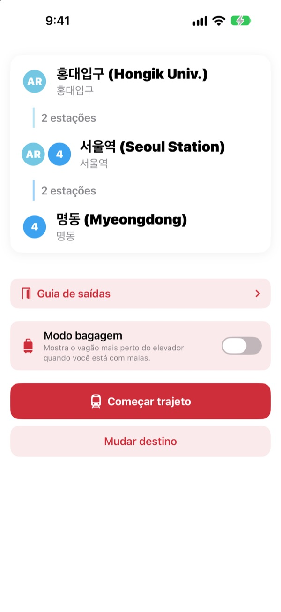
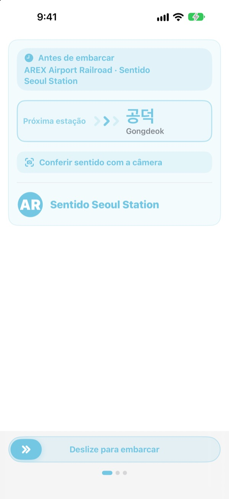
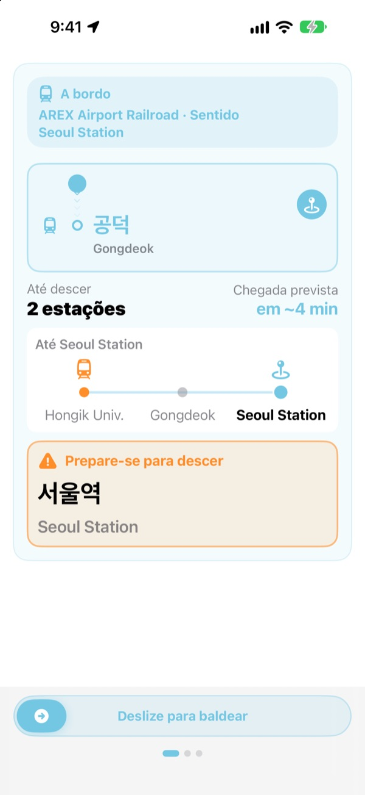
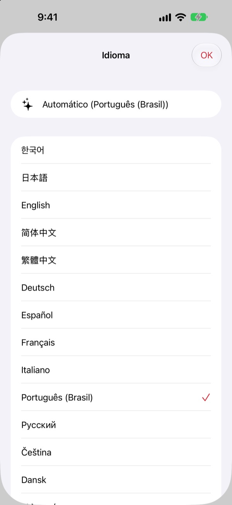

A plataforma certa.
A estação certa.
Escolha a origem e o destino e o KORA diz qual trem pegar, escrito exatamente como no letreiro da plataforma. Durante a viagem, ele acompanha sua estação e avisa a hora de descer.
Busca de rotas, sentido do trem e chegadas em tempo real são grátis.

Faça uma viagem de teste
Você está em Hongik Univ., na linha AREX. Escolha onde descer e toque em Começar trajeto para ver o sentido do trem e os avisos de descida, como no app.
Já ficou na plataforma sem saber qual trem pegar?
Os apps de mapa mostram a linha, mas na plataforma só há letreiros com nomes de estações que você nunca ouviu. Pegou o sentido errado, volta várias estações. Perdeu o aviso, passa do ponto. O KORA chama o seu trem do mesmo jeito que o letreiro e avisa antes da sua estação.
Do jeito que está no letreiro
O trem certo aparece exatamente como o destino escrito na plataforma e no próprio trem. Ficou na dúvida? Aponte a câmera para a placa da plataforma ou o letreiro de destino do trem e o KORA diz na hora se é o sentido certo.
O reconhecimento de texto acontece todo no seu iPhone.

Nunca mais passe do ponto
O KORA junta chegadas em tempo real, GPS, as partidas e paradas do trem e os avisos de bordo para saber onde você está. Perto da sua estação vem “Prepare-se para descer” e depois “Desça agora!”, com vibração.
O progresso também aparece na Tela Bloqueada e na Dynamic Island.

23 idiomas, nomes em coreano
Use o app inteiro em 23 idiomas; ele começa no idioma do seu iPhone. Os nomes das estações mostram o original em coreano ao lado da grafia latina das placas, para você achar tudo rápido na plataforma.

Comece em três passos
- 1
Defina a origem
O GPS acha a estação mais próxima, ou escolha você.
- 2
Escolha o destino
Baldeações, estações e o trem certo aparecem na hora.
- 3
Toque em Começar trajeto
A tela e uma vibração avisam a hora de descer.
Para que serve cada permissão
- Localização
- Achar a estação mais próxima
- Câmera
- Ler placas da plataforma e letreiros de destino para conferir o sentido
- Microfone e reconhecimento de fala
- Entender nos avisos de bordo o nome da estação e o lado das portas
- Movimento e Condicionamento
- Perceber partidas e paradas para acertar a estação atual
Todas as permissões são opcionais. Sem elas, você escolhe as estações e continua com rota e avisos de descida. Localização, câmera e avisos são processados no seu aparelho e nunca gravados, guardados ou enviados.
Achar o caminho é sempre grátis. O guia a bordo é KORA Pro.
Grátis
- Busca de rotas e baldeações
- O letreiro de destino do trem certo
- Chegadas em tempo real
- Conferência do sentido pela câmera
- Estação atual e aviso de descida na tela
- Todos os recursos Pro nas três primeiras viagens
KORA Pro
- Em toda viagem: guia na Tela Bloqueada, reconhecimento dos avisos e vibração na hora de descer
- Guia de saídas: o que há em cada saída das linhas 1 a 8 de Seul
- Aviso do último trem nas linhas 1 a 9
- Modo bagagem: o vagão mais perto do elevador nas linhas 1 a 8
Pague uma vez e é seu. Não é assinatura.
Quando as viagens grátis acabam, você continua viajando. O progresso na tela fica; só a Tela Bloqueada, o reconhecimento dos avisos e a vibração dão uma pausa.
Perguntas frequentes
O app não acha minha estação ou mostra outra.
Vá em Ajustes > Privacidade e Segurança > Serviços de Localização > KORA, escolha “Durante o Uso do App” e ative “Localização Precisa”. No subsolo ou em prédios grandes o GPS pode errar: toque no cartão da estação atual, no topo, e escolha você mesmo. Tudo funciona também sem acesso à localização.
Como uso a conferência pela câmera?
Com a rota na tela, abra a conferência pela câmera e enquadre a placa da plataforma ou o letreiro de destino do trem. Funciona melhor com o texto em coreano. Se a placa estiver escura, longe ou muito de lado, chegue mais perto e aponte de frente. O resultado é uma ajuda: na dúvida, confira também as placas da estação.
As chegadas em tempo real não aparecem.
Os dados vêm do Seoul Open Data Plaza, precisam de internet e existem principalmente nas linhas da região metropolitana de Seul. Sem conexão ou sem dados em tempo real, o KORA passa automaticamente para uma estimativa com horários, GPS e acelerômetro e continua guiando você. A busca de rotas funciona offline.
O aviso de descida veio um pouco cedo ou tarde.
No subsolo o GPS é fraco e a estação atual pode atrasar. Se você liberar o microfone, o KORA corrige a posição com os avisos de bordo. Os avisos são uma ajuda: preste atenção também aos anúncios e às placas.
Como mudo o idioma?
O KORA começa no idioma do seu iPhone. Toque e segure um cartão de estação na tela principal (estação atual ou destino) para abrir a escolha entre 23 idiomas.
A Atividade ao Vivo não aparece na Tela Bloqueada.
Confira em Ajustes > Apps > KORA (no iOS mais antigo, Ajustes > KORA) se as Atividades ao Vivo estão ativadas. Ela aparece quando você começa o guia da viagem e termina se você fechar o app por completo. A Dynamic Island só aparece nos modelos de iPhone que a têm.
Quais cidades estão incluídas?
Cerca de 930 estações na região metropolitana de Seul (Seul, Gyeonggi e Incheon, incluindo GTX-A, AREX, a linha Shinbundang e os VLTs), Busan, Daegu, Gwangju e Daejeon. Troque de cidade com as etiquetas de região no topo da escolha de estação.
Dá para testar antes da viagem?
Sim. Escolha você mesmo a origem e o destino e veja rotas, baldeações e sentido do trem de qualquer lugar do mundo.
O KORA Pro é uma assinatura?
Não. É uma compra única que fica com você e funciona com o Compartilhamento Familiar. Se reinstalar o app, toque em Restaurar compra na tela do Pro.
O que acontece com meus dados?
Sem conta e sem anúncios. Localização, câmera e reconhecimento dos avisos são processados no seu aparelho e nunca guardados ou enviados. Só coletamos estatísticas de uso anônimas para melhorar o app.
O app é acessível?
O KORA é compatível com o VoiceOver e com tamanhos de texto maiores. Sugestões para melhorar a acessibilidade são sempre bem-vindas.
Falta uma estação, um nome está estranho ou tem outra dúvida? Escreva para mizzking75@gmail.com. Informe a versão do app, o modelo do iPhone e as estações usadas para a gente verificar mais rápido.